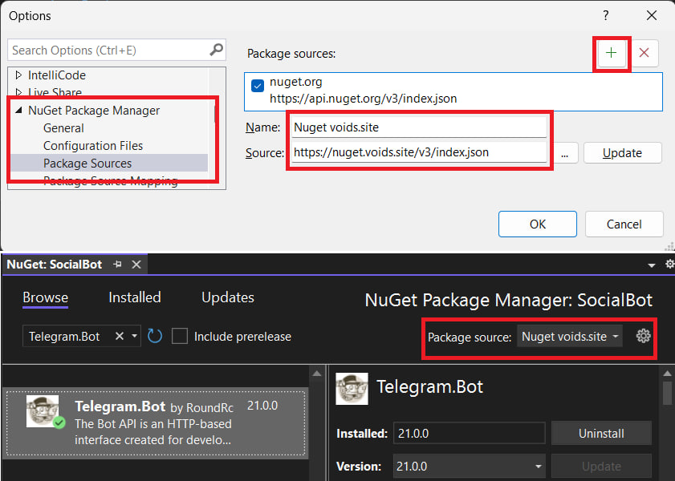
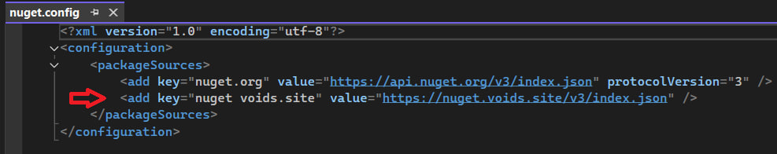
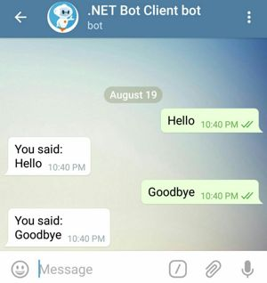
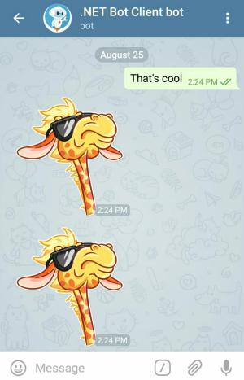

Telegram Bots Book


Telegram.Bot is the most popular .NET Client for Telegram Bot API.
The Bot API is an HTTP-based interface created for developers keen on building bots for Telegram. Check Bots: An introduction for developers to understand what a Telegram bot is and what it can do.
We, the Telegram Bots team, mainly focus on developing multiple NuGet packages for creating chatbots.
| Packages | Team | News Channel | Group Chat |
|---|---|---|---|
| Our nuget package feed | The team contributing to this work | Subscribe to @tgbots_dotnet channel to get our latest news | Join our chat to talk about bots and ask questions |
ℹ️ What Is This Book For
All Bot API methods are already documented by Telegram1 but this book covers all you need to know to create a chatbot in .NET. There are also many concrete examples written in C#. The guides here can even be useful to bot developers using other languages/platforms as it shows best practices in developing Telegram chatbots with examples.
⚠️ Obtain latest versions
Latest versions of the library are not yet available on Nuget․org due to false-positive malware detection. We are working with Nuget/ESET teams to resolve this issue.
In the mean time, it's available on our special nuget feed: https://nuget.voids.site/v3/index.json
Follow the pictures below to configure the Package source in Visual Studio:

or alternatively in a nuget.config file:

🔨 Get Started
Begin your bot development journey with the Quickstart guide.
🪄 Examples
Check out our examples repository for more.
✅ Correctness & Testing
This project is fully tested using Unit tests and Systems Integration tests before each release. In fact, our test cases are self-documenting and serve as examples for Bot API methods. Once you learn the basics of Telegram chatbots, you will be able to easily understand the code in examples and use it in your own bot projects.
Quickstart
Bot Father
Before you start, you need to talk to @BotFather on Telegram. Create a new
bot, acquire the bot token and get back here.

Bot token is a key that required to authorize the bot and send requests to the Bot API. Keep your token secure and store it safely, it can be used to control your bot. It should look like this:
1234567:4TT8bAc8GHUspu3ERYn-KGcvsvGB9u_n4ddy
Hello World
Now that you have a bot, it's time to bring it to life! Create a new console project for your bot. It could be a legacy project targeting .NET Framework 4.6.1-4.8 or a modern .NET Core 3.1-.NET 5+.
Examples in this guide target .NET 6, but earlier targets should work as well (including .NET Framework).
dotnet new console
Add a reference to Telegram.Bot package:
dotnet add package Telegram.Bot
This code fetches Bot information based on its access token by calling the Bot API getMe method. Open Program.cs and use the following content:
⚠️ Replace
{YOUR_ACCESS_TOKEN_HERE}with your access token from the@BotFather.
using Telegram.Bot;
var botClient = new TelegramBotClient("{YOUR_ACCESS_TOKEN_HERE}");
var me = await botClient.GetMeAsync();
Console.WriteLine($"Hello, World! I am user {me.Id} and my name is {me.FirstName}.");
Running the program gives you the following output:
dotnet run
Hello, World! I am user 1234567 and my name is Awesome Bot.
Great! This bot is self-aware. To make the bot interact with a user, head to the next page.
Example - First Chat Bot
On the previous page we got an access token and used the getMe method to check our setup.
Now, it is time to make an interactive bot that gets users' messages and replies to them like in this screenshot:

Copy the following code to Program.cs.
⚠️ Replace
{YOUR_ACCESS_TOKEN_HERE}with the access token from the [@BotFather].
using Telegram.Bot;
using Telegram.Bot.Exceptions;
using Telegram.Bot.Polling;
using Telegram.Bot.Types;
using Telegram.Bot.Types.Enums;
var botClient = new TelegramBotClient("{YOUR_ACCESS_TOKEN_HERE}");
using CancellationTokenSource cts = new ();
// StartReceiving does not block the caller thread. Receiving is done on the ThreadPool.
ReceiverOptions receiverOptions = new ()
{
AllowedUpdates = Array.Empty<UpdateType>() // receive all update types except ChatMember related updates
};
botClient.StartReceiving(
updateHandler: HandleUpdateAsync,
pollingErrorHandler: HandlePollingErrorAsync,
receiverOptions: receiverOptions,
cancellationToken: cts.Token
);
var me = await botClient.GetMeAsync();
Console.WriteLine($"Start listening for @{me.Username}");
Console.ReadLine();
// Send cancellation request to stop bot
cts.Cancel();
async Task HandleUpdateAsync(ITelegramBotClient botClient, Update update, CancellationToken cancellationToken)
{
// Only process Message updates: https://core.telegram.org/bots/api#message
if (update.Message is not { } message)
return;
// Only process text messages
if (message.Text is not { } messageText)
return;
var chatId = message.Chat.Id;
Console.WriteLine($"Received a '{messageText}' message in chat {chatId}.");
// Echo received message text
Message sentMessage = await botClient.SendTextMessageAsync(
chatId: chatId,
text: "You said:\n" + messageText,
cancellationToken: cancellationToken);
}
Task HandlePollingErrorAsync(ITelegramBotClient botClient, Exception exception, CancellationToken cancellationToken)
{
var ErrorMessage = exception switch
{
ApiRequestException apiRequestException
=> $"Telegram API Error:\n[{apiRequestException.ErrorCode}]\n{apiRequestException.Message}",
_ => exception.ToString()
};
Console.WriteLine(ErrorMessage);
return Task.CompletedTask;
}
Run the program:
dotnet run
It runs waiting for text messages unless forcefully stopped by pressing Enter. Open a private chat with your bot in Telegram and send a text message to it. Bot should reply in no time.
By invoking StartReceiving(...) bot client starts fetching updates using getUpdates method for the bot
from Telegram servers. This operation does not block the caller thread, because it is done on the ThreadPool. We use Console.ReadLine() to keep the app running.
When user sends a message, the HandleUpdateAsync(...) method gets invoked with the Update object passed as an argument.
We check Message.Type and skip the rest if it is not a text message.
Finally, we send a text message back to the same chat we got the message from.
The HandlePollingErrorAsync(...) method is invoked in case of an error that occurred while fetching updates.
If you take a look at the console, the program outputs the chatId value. Copy the chat id number to make testing easier
for yourself on the next pages.
Received a 'text' message in chat 123456789.
Beginner
Sending Messages
There are many different types of message that a bot can send. Fortunately, methods for sending such messages are similar. Take a look at these examples:
Sending text message

Message message = await botClient.SendTextMessageAsync(
chatId: chatId,
text: "Hello, World!",
cancellationToken: cancellationToken);
Sending sticker message

Message message = await botClient.SendStickerAsync(
chatId: chatId,
sticker: InputFile.FromUri("https://github.com/TelegramBots/book/raw/master/src/docs/sticker-dali.webp"),
cancellationToken: cancellationToken);
Sending video message

Message message = await botClient.SendVideoAsync(
chatId: chatId,
video: InputFile.FromUri("https://github.com/TelegramBots/book/raw/master/src/docs/video-bulb.mp4"),
cancellationToken: cancellationToken);
Text Messages and More


Text is a powerful interface for your bot and sendMessage probably is the most used method of the Telegram Bot API.
Text messages are easy to send and fast to display on devices with slower networking.
Don't send boring plain text to users all the time. Telegram allows you to format the text using Markdown or HTML.
Send Text Message
The code snippet below sends a message with multiple parameters that looks like this:

You can use this code snippet in the event handler from Example Bot page and use
chatIdor put thechatIdvalue if you know it.
Message message = await botClient.SendTextMessageAsync(
chatId: chatId,
text: "Trying *all the parameters* of `sendMessage` method",
parseMode: ParseMode.MarkdownV2,
disableNotification: true,
replyToMessageId: update.Message.MessageId,
replyMarkup: new InlineKeyboardMarkup(
InlineKeyboardButton.WithUrl(
text: "Check sendMessage method",
url: "https://core.telegram.org/bots/api#sendmessage")),
cancellationToken: cancellationToken);
The method SendTextMessageAsync of .NET Bot Client maps to sendMessage on Telegram's Bot API. This method sends a
text message and returns the message object sent.
text is written in MarkDown format and parseMode indicates that. You can also write in HTML or plain text.
By passing disableNotification we tell Telegram client on user's device not to show/sound a notification.
It's a good idea to make it clear to a user the reason why the bot is sending this message and that's why we pass the user's
message id for replyToMessageId.
You have the option of specifying a replyMarkup when sending messages.
Reply markups are explained in details later in this book.
Here we used an Inline Keyboard Markup with a button that attaches to the message itself. Clicking that opens
sendMessage method documentation in the browser.
The Sent Message
Almost all of the methods for sending messages return you the message you just sent. Let's have a look at this object. Add this statement after the previous code.
Console.WriteLine(
$"{message.From.FirstName} sent message {message.MessageId} " +
$"to chat {message.Chat.Id} at {message.Date}. " +
$"It is a reply to message {message.ReplyToMessage.MessageId} " +
$"and has {message.Entities.Length} message entities.");
Output should look similar to this:
Awesome bot sent message 123 to chat 123456789 at 8/21/18 11:25:09 AM. It is a reply to message 122 and has 2 message entities.
There are a few things to note.
Date and time is in UTC format and not your local timezone.
Convert it to local time by calling message.Date.ToLocalTime() method.
Message Entity refers to those formatted parts of the text: all the parameters in bold and
sendMessage in mono-width font.
Property message.Entities holds the formatting information and message.EntityValues gives you the actual value.
For example, in the message we just sent:
message.Entities.First().Type == MessageEntityType.Bold
message.EntityValues.First() == "all the parameters"
Currently, message object doesn't contain information about its reply markup.
Try putting a breakpoint in the code to examine all the properties on a message objects you get.
Photo and Sticker Messages
You can provide the source file for almost all multimedia messages (e.g. photo, video) in 3 ways:
- Uploading a file with the HTTP request
- HTTP URL for Telegram to get a file from the internet
file_idof an existing file on Telegram servers (recommended)
Examples in this section show all three. You will learn more about them later on when we discuss file upload and download.
Photo


Sending a photo is simple. Here is an example:
Message message = await botClient.SendPhotoAsync(
chatId: chatId,
photo: InputFile.FromUri("https://github.com/TelegramBots/book/raw/master/src/docs/photo-ara.jpg"),
caption: "<b>Ara bird</b>. <i>Source</i>: <a href=\"https://pixabay.com\">Pixabay</a>",
parseMode: ParseMode.Html,
cancellationToken: cancellationToken);

Caption
Multimedia messages can optionally have a caption attached to them. Here we sent a caption in HTML format. A user can click on Pixabay in the caption to open its URL in the browser.
Similar to message entities discussed before, caption entities on Message object are the result of
parsing formatted(Markdown or HTML) caption text.
Try inspecting these properties in debug mode:
message.Caption: caption in plain text without formattingmessage.CaptionEntities: info about special entities in the captionmessage.CaptionEntityValues: text values of mentioned entities
Photo Message
The message returned from this method represents a photo message because message.Photo has a value.
Its value is a PhotoSize array with each element representing the same photo in different dimensions.
If your bot needs to send this photo again at some point, it is recommended to store this array
so you can reuse the file_id value.
Here is how message.Photo array looks like in JSON:
[
{
"file_id": "AgADBAADDqgxG-QDDVCm5JVvld7MN0z6kBkABCQawlb-dBXqBZUEAAEC",
"file_size": 1254,
"width": 90,
"height": 60
},
{
"file_id": "AgADBAADDqgxG-QDDVCm5JVvld7MN0z6kBkABAKByRnc22RmBpUEAAEC",
"file_size": 16419,
"width": 320,
"height": 213
},
{
"file_id": "AgADBAADDqgxG-QDDVCm5JVvld7MN0z6kBkABHezqGiNOz9yB5UEAAEC",
"file_size": 57865,
"width": 640,
"height": 426
}
]
Sticker


Telegram stickers are fun and our bot is about to send its very first sticker. Sticker files should be in WebP format.
This code sends the same sticker twice. First by passing HTTP URL to a WebP sticker file and
second by reusing FileId of the same sticker on Telegram servers.
Message message1 = await botClient.SendStickerAsync(
chatId: chatId,
sticker: InputFile.FromUri("https://github.com/TelegramBots/book/raw/master/src/docs/sticker-fred.webp"),
cancellationToken: cancellationToken);
Message message2 = await botClient.SendStickerAsync(
chatId: chatId,
sticker: InputFile.FromFileId(message1.Sticker!.FileId),
cancellationToken: cancellationToken);

Try inspecting the sticker1.Sticker property. It is of type Sticker and its schema looks similar to a photo.
There is more to stickers and we will talk about them in greater details later.
Audio and Voice Messages

These two types of messages are pretty similar. Audio is MP3-encoded file that can be played in music player. A voice file has OGG format and is not shown in music player.
Audio

This is the code to send an MP3 soundtrack. You might be wondering why some parameters are commented out? That's because this MP3 file has metadata on it and Telegram does a good job at reading it.
Message message = await botClient.SendAudioAsync(
chatId: chatId,
audio: InputFile.FromUri("https://github.com/TelegramBots/book/raw/master/src/docs/audio-guitar.mp3"),
/*
performer: "Joel Thomas Hunger",
title: "Fun Guitar and Ukulele",
duration: 91, // in seconds
*/
cancellationToken: cancellationToken);

And a user can see the audio in Music Player:
Method returns an audio message. Let's take a look at the value of message.Audio property in JSON format:
{
"duration": 91,
"mime_type": "audio/mpeg",
"title": "Fun Guitar and Ukulele",
"performer": "Joel Thomas Hunger",
"file_id": "CQADBAADKQADA3oUUKalqDOOcqesAg",
"file_size": 1102154
}
Voice

A voice message is an OGG audio file. Let's send it differently this time by uploading the file from disk alongside with an HTTP request.
To run this example, download the NFL Commentary voice file to your disk.
A value is passed for duration because Telegram can't figure that out from a file's metadata.
⚠️ Replace
/path/to/voice-nfl_commentary.oggwith an actual file path.
await using Stream stream = System.IO.File.OpenRead("/path/to/voice-nfl_commentary.ogg");
Message message = await botClient.SendVoiceAsync(
chatId: chatId,
voice: InputFile.FromStream(stream),
duration: 36,
cancellationToken: cancellationToken);

A voice message is returned from the method. Inspect the message.Voice property to learn more.
Video and Video Note Messages

You can send MP4 files as a regular video or a video note. Other video formats may be sent as documents.
Video

Videos, like other multimedia messages, can have caption, reply, reply markup, and etc. You can optionally specify the duration and resolution of the video.
In the example below, we send a video of a 10 minute countdown and expect the Telegram clients to stream that long video instead of downloading it completely. We also set a thumbnail image for our video.
Message message = await botClient.SendVideoAsync(
chatId: chatId,
video: InputFile.FromUri("https://raw.githubusercontent.com/TelegramBots/book/master/src/docs/video-countdown.mp4"),
thumbnail: InputFile.FromUri("https://raw.githubusercontent.com/TelegramBots/book/master/src/2/docs/thumb-clock.jpg"),
supportsStreaming: true,
cancellationToken: cancellationToken);
Check the Bot API docs for
sendVideomethod to learn more about video size limits and the thumbnail images.

User should be able to seek through the video without the video being downloaded completely.

Video Note

Video notes, shown in circles to the user, are usually short (1 minute or less) with the same width and height.
You can send a video note only by uploading the video file or reusing the file_id of another video note.
Sending video note by its HTTP URL is not supported currently.
Download the Sea Waves video to your disk for this example.
await using Stream stream = System.IO.File.OpenRead("/path/to/video-waves.mp4");
Message message = await botClient.SendVideoNoteAsync(
chatId: chatId,
videoNote: InputFile.FromStream(stream),
duration: 47,
length: 360, // value of width/height
cancellationToken: cancellationToken);

Album Messages


Using sendMediaGroup method you can send a group of photos, videos, documents or audios as an album. Documents and audio files can be only grouped in an album with messages of the same type.
Message[] messages = await botClient.SendMediaGroupAsync(
chatId: chatId,
media: new IAlbumInputMedia[]
{
new InputMediaPhoto(
InputFile.FromUri("https://cdn.pixabay.com/photo/2017/06/20/19/22/fuchs-2424369_640.jpg")),
new InputMediaPhoto(
InputFile.FromUri("https://cdn.pixabay.com/photo/2017/04/11/21/34/giraffe-2222908_640.jpg")),
},
cancellationToken: cancellationToken);
Document and Animation Messages
Send documents


Use sendDocument method to send general files.
Message message = await botClient.SendDocumentAsync(
chatId: chatId,
document: InputFile.FromUri("https://github.com/TelegramBots/book/raw/master/src/docs/photo-ara.jpg"),
caption: "<b>Ara bird</b>. <i>Source</i>: <a href=\"https://pixabay.com\">Pixabay</a>",
parseMode: ParseMode.Html,
cancellationToken: cancellationToken);
Send animations


Use sendAnimation method to send animation files (GIF or H.264/MPEG-4 AVC video without sound).
Message message = await botClient.SendAnimationAsync(
chatId: chatId,
animation: InputFile.FromUri("https://raw.githubusercontent.com/TelegramBots/book/master/src/docs/video-waves.mp4"),
caption: "Waves",
cancellationToken: cancellationToken);
Native Poll Messages

Just as regular users bots can only send native polls to groups and channels, but not to private chats.
Send a poll

This is the code to send a poll to a chat.
Message pollMessage = await botClient.SendPollAsync(
chatId: "@channel_name",
question: "Did you ever hear the tragedy of Darth Plagueis The Wise?",
options: new[]
{
"Yes for the hundredth time!",
"No, who`s that?"
},
cancellationToken: cancellationToken);

You can optionally send a keyboard with a poll, both an inline or a regular one.
You'll get the message with Poll object inside it.
Stop a poll

To close a poll you need to know original chat and message ids of the poll that you got from calling SendPollAsync method.
Let's close the poll that we sent in the previous example:
Poll poll = await botClient.StopPollAsync(
chatId: pollMessage.Chat.Id,
messageId: pollMessage.MessageId,
cancellationToken: cancellationToken);

You can add an inline keyboard when you close a poll.
As a result of the request you'll get the the final poll state with property Poll.IsClosed set to true.
If you'll try to close a forwarded poll using message and chat ids from the received message even if your bot is the author of the poll you'll get an ApiRequestException with message Bad Request: poll can't be stopped. Polls originated from channels is an exception since forwarded messages originated from channels contain original chat and message ids inside properties Message.ForwardFromChat.Id and Message.ForwardFromMessageId.
Also if you'll try to close an already closed poll you'll get ApiRequestException with message Bad Request: poll has already been closed.
Other Messages
There are other kind of message types which are supported by the client. In the following paragraphs we will look how to send contacts, venues or locations.
Contact


This is the code to send a contact. Mandatory are the parameters chatId, phoneNumber and firstName.
Message message = await botClient.SendContactAsync(
chatId: chatId,
phoneNumber: "+1234567890",
firstName: "Han",
lastName: "Solo",
cancellationToken: cancellationToken);

If you want to send a contact as vCard you can achieve this by adding a valid vCard string as value for the optional parameter vCard as seen in the given example below.
Message message = await botClient.SendContactAsync(
chatId: chatId,
phoneNumber: "+1234567890",
firstName: "Han",
vCard: "BEGIN:VCARD\n" +
"VERSION:3.0\n" +
"N:Solo;Han\n" +
"ORG:Scruffy-looking nerf herder\n" +
"TEL;TYPE=voice,work,pref:+1234567890\n" +
"EMAIL:hansolo@mfalcon.com\n" +
"END:VCARD",
cancellationToken: cancellationToken);

Venue


The code snippet below sends a venue with a title and a address as given parameters:
Message message = await botClient.SendVenueAsync(
chatId: chatId,
latitude: 50.0840172f,
longitude: 14.418288f,
title: "Man Hanging out",
address: "Husova, 110 00 Staré Město, Czechia",
cancellationToken: cancellationToken);

Location


The difference between sending a location and a venue is, that the venue requires a title and address. A location can be any given point as latitude and longitude.
The following snippet shows how to send a location with the mandatory parameters:
Message message = await botClient.SendLocationAsync(
chatId: chatId,
latitude: 33.747252f,
longitude: -112.633853f,
cancellationToken: cancellationToken);

Reply Markup

Telegram provides two types of reply markup: Custom keyboards and Inline keyboards.
Custom keyboards
Whenever your bot sends a message, it can pass along a special keyboard with predefined reply options. Regular keyboards are represented by ReplyKeyboardMarkup object. You can request a contact or location information from the user with KeyboardButton or send a poll. Regular button will send predefined text to the chat.
Keyboard is an array of button rows, each represented by an array of KeyboardButton objects. KeyboardButton supports text and emoji.
By default, custom keyboards are displayed until a new keyboard is sent by a bot.
Single-row keyboard markup
A ReplyKeyboardMarkup with two buttons in a single row:
// using Telegram.Bot.Types.ReplyMarkups;
ReplyKeyboardMarkup replyKeyboardMarkup = new(new[]
{
new KeyboardButton[] { "Help me", "Call me ☎️" },
})
{
ResizeKeyboard = true
};
Message sentMessage = await botClient.SendTextMessageAsync(
chatId: chatId,
text: "Choose a response",
replyMarkup: replyKeyboardMarkup,
cancellationToken: cancellationToken);
We specify
ResizeKeyboard = truehere to resize the keyboard vertically for optimal fit (e.g., make the keyboard smaller if there are just two rows of buttons).
Multi-row keyboard markup
A ReplyKeyboardMarkup with two rows of buttons:
// using Telegram.Bot.Types.ReplyMarkups;
ReplyKeyboardMarkup replyKeyboardMarkup = new(new[]
{
new KeyboardButton[] { "Help me" },
new KeyboardButton[] { "Call me ☎️" },
})
{
ResizeKeyboard = true
};
Message sentMessage = await botClient.SendTextMessageAsync(
chatId: chatId,
text: "Choose a response",
replyMarkup: replyKeyboardMarkup,
cancellationToken: cancellationToken);
Request information
ReplyKeyboardMarkup containing buttons for contact and location requests using helper methods KeyboardButton.WithRequestLocation and KeyboardButton.WithRequestContact:
// using Telegram.Bot.Types.ReplyMarkups;
ReplyKeyboardMarkup replyKeyboardMarkup = new(new[]
{
KeyboardButton.WithRequestLocation("Share Location"),
KeyboardButton.WithRequestContact("Share Contact"),
});
Message sentMessage = await botClient.SendTextMessageAsync(
chatId: chatId,
text: "Who or Where are you?",
replyMarkup: replyKeyboardMarkup,
cancellationToken: cancellationToken);
Remove keyboard
To remove keyboard you have to send an instance of ReplyKeyboardRemove object:
// using Telegram.Bot.Types.ReplyMarkups;
Message sentMessage = await botClient.SendTextMessageAsync(
chatId: chatId,
text: "Removing keyboard",
replyMarkup: new ReplyKeyboardRemove(),
cancellationToken: cancellationToken);
Inline keyboards
There are times when you'd prefer to do things without sending any messages to the chat. For example, when your user is changing settings or flipping through search results. In such cases you can use Inline Keyboards that are integrated directly into the messages they belong to.
Unlike custom reply keyboards, pressing buttons on inline keyboards doesn't result in messages sent to the chat. Instead, inline keyboards support buttons that work behind the scenes: callback buttons, URL buttons and switch to inline buttons.
Callback buttons
When a user presses a callback button, no messages are sent to the chat. Instead, your bot simply receives the relevant query. Upon receiving the query, your bot can display some result in a notification at the top of the chat screen or in an alert. In this example we use InlineKeyboardButton.WithCallbackData helper method to create a button with a text and callback data.
// using Telegram.Bot.Types.ReplyMarkups;
InlineKeyboardMarkup inlineKeyboard = new(new[]
{
// first row
new []
{
InlineKeyboardButton.WithCallbackData(text: "1.1", callbackData: "11"),
InlineKeyboardButton.WithCallbackData(text: "1.2", callbackData: "12"),
},
// second row
new []
{
InlineKeyboardButton.WithCallbackData(text: "2.1", callbackData: "21"),
InlineKeyboardButton.WithCallbackData(text: "2.2", callbackData: "22"),
},
});
Message sentMessage = await botClient.SendTextMessageAsync(
chatId: chatId,
text: "A message with an inline keyboard markup",
replyMarkup: inlineKeyboard,
cancellationToken: cancellationToken);
URL buttons
Buttons of this type have a small arrow icon to help the user understand that tapping on a URL button will open an external link. In this example we use InlineKeyboardButton.WithUrl helper method to create a button with a text and url.
// using Telegram.Bot.Types.ReplyMarkups;
InlineKeyboardMarkup inlineKeyboard = new(new[]
{
InlineKeyboardButton.WithUrl(
text: "Link to the Repository",
url: "https://github.com/TelegramBots/Telegram.Bot")
});
Message sentMessage = await botClient.SendTextMessageAsync(
chatId: chatId,
text: "A message with an inline keyboard markup",
replyMarkup: inlineKeyboard,
cancellationToken: cancellationToken);
Switch to Inline buttons
Pressing a switch to inline button prompts the user to select a chat, opens it and inserts the bot's username into the input field. You can also pass a query that will be inserted along with the username – this way your users will immediately get some inline results they can share. In this example we use InlineKeyboardButton.WithSwitchInlineQuery and InlineKeyboardButton.WithSwitchInlineQueryCurrentChat helper methods to create buttons which will insert the bot's username in the chat's input field.
// using Telegram.Bot.Types.ReplyMarkups;
InlineKeyboardMarkup inlineKeyboard = new(new[]
{
InlineKeyboardButton.WithSwitchInlineQuery(
text: "switch_inline_query"),
InlineKeyboardButton.WithSwitchInlineQueryCurrentChat(
text: "switch_inline_query_current_chat"),
});
Message sentMessage = await botClient.SendTextMessageAsync(
chatId: chatId,
text: "A message with an inline keyboard markup",
replyMarkup: inlineKeyboard,
cancellationToken: cancellationToken);
Intermediate
Getting Updates
There are two mutually exclusive ways of receiving updates for your bot — the long polling using getUpdates method on one hand and Webhooks on the other. Telegram is queueing updates until the bot receives them either way, but they will not be kept longer than 24 hours.
-
With long polling, the client requests information from the server using
getUpdatesmethod, but with the expectation the server may not respond immediately. If the server has no new information for the client when the poll is received, instead of sending an empty response, the server holds the request open and waits for response information to become available. Once it does have new information, the server immediately sends a response to the client, completing the request. Upon receipt of the server response, the client often immediately issues another server request. -
Setting a webhook means you supplying Telegram with a location in the form of an URL, on which your bot listens for updates. Telegram need to be able to connect and post updates to that URL. To be able to handle webhook updates you'll need a server that:
- Supports IPv4, IPv6 is currently not supported for webhooks.
- Accepts incoming POSTs from subnets 149.154.160.0/20 and 91.108.4.0/22 on port 443, 80, 88, or 8443.
- Is able to handle TLS1.2(+) HTTPS-traffic.
- Provides a supported, non-wildcard, verified or self-signed certificate.
- Uses a CN or SAN that matches the domain you’ve supplied on setup.
- Supplies all intermediate certificates to complete a verification chain.
You can find more useful information on setting webhook in Marvin's Marvellous Guide to All Things Webhook
Each user interaction with your bot results in new Update object. Its fields will be set depending on update type.
Example projects
Long polling
- Simple console application. Demonstrates the use of the Telegram.Bot.Extensions.Polling package.
Webhook
- ASP.NET Core application
- Azure Functions
- AWS Lambda
Long Polling
This chapter is not yet written.
Webhooks
This chapter is not yet written.
Inline Mode

Telegram bots can be queried directly in the chat or via inline queries.
To use inline queries in your bot, you need to set up inline mode by command:

Import Telegram.Bot.Types.InlineQueryResults namespace for inline query types.
There are two types that allow you to work with inline queries - InlineQuery and ChosenInlineResult:
await (update.Type switch
{
UpdateType.InlineQuery => BotOnInlineQueryReceived(bot, update.InlineQuery!),
UpdateType.ChosenInlineResult => BotOnChosenInlineResultReceived(bot, update.ChosenInlineResult!),
});
InlineQuery

Suppose we have two arrays:
private readonly string[] sites = { "Google", "Github", "Telegram", "Wikipedia" };
private readonly string[] siteDescriptions =
{
"Google is a search engine",
"Github is a git repository hosting",
"Telegram is a messenger",
"Wikipedia is an open wiki"
};
So we can handle inline queries this way:
async Task BotOnInlineQueryReceived(ITelegramBotClient bot, InlineQuery inlineQuery)
{
var results = new List<InlineQueryResult>();
var counter = 0;
foreach (var site in sites)
{
results.Add(new InlineQueryResultArticle(
$"{counter}", // we use the counter as an id for inline query results
site, // inline query result title
new InputTextMessageContent(siteDescriptions[counter])) // content that is submitted when the inline query result title is clicked
);
counter++;
}
await bot.AnswerInlineQueryAsync(inlineQuery.Id, results); // answer by sending the inline query result list
}
InlineQueryResult is an abstract type used to create a response for inline queries. You can use these result types for inline queries: InlineQueryResultArticle for articles, InlineQueryResultPhoto for photos, etc.
ChosenInlineResult

This type helps to handle chosen inline result. For example, you may want to know which result users chose:
Task BotOnChosenInlineResultReceived(ITelegramBotClient bot, ChosenInlineResult chosenInlineResult)
{
if (uint.TryParse(chosenInlineResult.ResultId, out var resultId) // check if a result id is parsable and introduce variable
&& resultId < sites.Length)
{
Console.WriteLine($"User {chosenInlineResult.From} has selected site: {sites[resultId]}");
}
return Task.CompletedTask;
}
To use the feature you need to enable "inline feedback" in BotFather by /setinlinefeedback command:

Final result:

Working with Files
Downloading files
First, read the documentation on getFile method.
To download file you have to know its file identifier - FileId.
Finding the file identifier
Telegram Bot API has several object types, representing file:
PhotoSize, Animation, Audio, Document, Video, VideoNote, Voice, Sticker.
The file identifier for each file type can be found in their FileId property (e.g. Message.Audio.FileId).
The exception is photos, which represented as an array of PhotoSize[] objects.
For each photo Telegram sends you a set of PhotoSize objects - available resolutions, you can choose from.
Generally, you will want the highest quality - the last PhotoSize object in the array.
With LINQ, this boils down to Message.Photo.Last().FileId.
Downloading a file
Downloading a file from Telegram is done in two steps:
- Get file information with
getFilemethod. ResultingFileobject containsFilePathfrom which we can download the file. - Downloading the file.
var fileId = update.Message.Photo.Last().FileId;
var fileInfo = await botClient.GetFileAsync(fileId);
var filePath = fileInfo.FilePath;
The URL from which you can now download the file is https://api.telegram.org/file/bot<token>/<FilePath>.
To download file you can use DownloadFileAsync function:
const string destinationFilePath = "../downloaded.file";
await using Stream fileStream = System.IO.File.Create(destinationFilePath);
await botClient.DownloadFileAsync(
filePath: filePath,
destination: fileStream,
cancellationToken: cancellationToken);
For your convenience the library provides you a helper function that does both - GetInfoAndDownloadFileAsync:
const string destinationFilePath = "../downloaded.file";
await using Stream fileStream = System.IO.File.Create(destinationFilePath);
var file = await botClient.GetInfoAndDownloadFileAsync(
fileId: fileId,
destination: fileStream,
cancellationToken: cancellationToken);
Uploading files
First, read the documentation on sending files.
Upload local file
To upload local file open stream and call one of the file-sending functions:
await using Stream stream = System.IO.File.OpenRead("../hamlet.pdf");
Message message = await botClient.SendDocumentAsync(
chatId: chatId,
document: InputFile.FromStream(stream: stream, fileName: "hamlet.pdf"),
caption: "The Tragedy of Hamlet,\nPrince of Denmark");
Be aware of limitation for this method - 10 MB max size for photos, 50 MB for other files.
Upload file by file identifier
If the file is already stored somewhere on the Telegram servers, you don't need to reupload it: each file object has a FileId property. Simply pass this FileId as a parameter instead of uploading. There are no limits for files sent this way.
var fileId = update.Message.Photo.Last().FileId;
Message message = await botClient.SendPhotoAsync(
chatId: chatId,
photo: InputFile.FromFileId(fileId));
Upload by URL
Provide Telegram with an HTTP URL for the file to be sent. Telegram will download and send the file. 5 MB max size for photos and 20 MB max for other types of content.
Message message = await botClient.SendPhotoAsync(
chatId: chatId,
photo: InputFile.FromUri("https://cdn.pixabay.com/photo/2017/04/11/21/34/giraffe-2222908_640.jpg"));
Stickers
Sticker


Telegram stickers are fun and our bot is about to send its very first sticker. Sticker files should be in WebP format.
This code sends the same sticker twice. First by passing HTTP URL to a WebP sticker file and
second by reusing FileId of the same sticker on Telegram servers.
Message message1 = await botClient.SendStickerAsync(
chatId: chatId,
sticker: InputFile.FromUri("https://github.com/TelegramBots/book/raw/master/src/docs/sticker-fred.webp"),
cancellationToken: cancellationToken);
Message message2 = await botClient.SendStickerAsync(
chatId: chatId,
sticker: InputFile.FromFileId(message1.Sticker!.FileId),
cancellationToken: cancellationToken);

Try inspecting the sticker1.Sticker property. It is of type [Sticker] and its schema looks similar to a photo.
Advanced
Working Behind a Proxy
TelegramBotClient allows you to use a proxy for Bot API connections. This guide covers using three different proxy solutions.

If you are in a country, such as Iran, where HTTP and SOCKS proxy connections to Telegram servers are blocked, consider using a VPN, using Tor Network, or hosting your bot in other jurisdictions.
HTTP Proxy
You can configure HttpClient with WebProxy and pass it to the Bot client.
// using System.Net;
// using System.Net.Http;
WebProxy webProxy = new (Host: "https://example.org", Port: 8080)
{
// Credentials if needed:
Credentials = new NetworkCredential("USERNAME", "PASSWORD")
};
HttpClient httpClient = new (
new HttpClientHandler { Proxy = webProxy, UseProxy = true, }
);
var botClient = new TelegramBotClient("YOUR_API_TOKEN", httpClient);
SOCKS5 Proxy
As of .NET 6, SocketsHttpHandler is able to use Socks4, Socks4a and Socks5 proxies!
// using System.Net;
// using System.Net.Http;
WebProxy proxy = new ("socks5://127.0.0.1:9050")
{
Credentials = new NetworkCredential("USERNAME", "PASSWORD")
};
HttpClient httpClient = new (
new SocketsHttpHandler { Proxy = proxy, UseProxy = true, }
);
var botClient = new TelegramBotClient("YOUR_API_TOKEN", httpClient);
SOCKS5 Proxy over Tor
Warning: Use for Testing only!
Do not use this method in a production environment as it has high network latency and poor bandwidth.
Using Tor, a developer can avoid network restrictions while debugging and testing the code before a production release.
-
Install Tor Browser
-
Open the
torccfile with a text editor (Found inTor Browser\Browser\TorBrowser\Data\Tor) -
Add the following lines: (configurations are described below)
EntryNodes {NL} ExitNodes {NL} StrictNodes 1 SocksPort 127.0.0.1:9050 -
Look at the Socks5 proxy example above.
-
Start the Tor Browser
Usage:
// using System.Net;
// using System.Net.Http;
WebProxy proxy = new ("socks5://127.0.0.1:9050");
HttpClient httpClient = new (
new SocketsHttpHandler { Proxy = proxy, UseProxy = true }
);
var botClient = new TelegramBotClient("YOUR_API_TOKEN", httpClient);
Note that Tor has to be active at all times for the bot to work.
Configurations in torcc
EntryNodes {NL}
ExitNodes {NL}
StrictNodes 1
These three lines make sure you use nodes from the Netherlands as much as possible to reduce latency.
SocksPort 127.0.0.1:9050
This line tells tor to listen on port 9050 for any socks connections. You can change the port to anything you want (9050 is just the default), only make sure to use the same port in your code.
Telegram Passport


Telegram Passport is a unified authorization method for services that require personal identification. As a bot developer, you can use it to receive confidential user data in an end-to-end encrypted fashion. There are several Know Your Customer(KYC) solutions that have already added support for Telegram Passport.
This guide is targeted at bot developers and assumes the audience is already familiar with:
Telegram Passport - Quickstart

This guide teaches the basics of working with Telegram Passport. See the complete version of the code at Quickstart project. Code snippets on this page are in the context of that project.
Package
You need to add Telegram.Bot.Extensions.Passport extension package to your project
in addition to the core package (Telegram.Bot).
⭐️ Star the Telegram.Bot.Extensions.Passport project on GitHub 👍
dotnet add package Telegram.Bot.Extensions.Passport
Encryption Keys
You don't really need to generate any RSA key. Use our sample keys for this demo.
Send the public key to @BotFather using /setpublickey command:

Copy this public key and send it to BotFather.
-----BEGIN PUBLIC KEY-----
MIIBIjANBgkqhkiG9w0BAQEFAAOCAQ8AMIIBCgKCAQEA0VElWoQA2SK1csG2/sY/
wlssO1bjXRx+t+JlIgS6jLPCefyCAcZBv7ElcSPJQIPEXNwN2XdnTc2wEIjZ8bTg
BlBqXppj471bJeX8Mi2uAxAqOUDuvGuqth+mq7DMqol3MNH5P9FO6li7nZxI1FX3
9u2r/4H4PXRiWx13gsVQRL6Clq2jcXFHc9CvNaCQEJX95jgQFAybal216EwlnnVV
giT/TNsfFjW41XJZsHUny9k+dAfyPzqAk54cgrvjgAHJayDWjapq90Fm/+e/DVQ6
BHGkV0POQMkkBrvvhAIQu222j+03frm9b2yZrhX/qS01lyjW4VaQytGV0wlewV6B
FwIDAQAB
-----END PUBLIC KEY-----
Now Telegram client app can encrypt the data for your bot using this key.
Request Information
Bot waits for a text message from user. Once it receives a text message, it generates an authorization request link and sends that to the user.
Authorization Request

A passport authorization request means that the bot should ask the user to open a tg://resolve URI in the browser
with specific parameters in its query string.
You can alternatively have a button in an HTML page on your website for that.
Type AuthorizationRequestParameters helps you in creating such an URI.
AuthorizationRequestParameters authReq = new AuthorizationRequestParameters(
botId: 123456, // bot user ID
publicKey: "...", // public key in PEM format. same as the key above.
nonce: "unique nonce for this request",
scope: new PassportScope(new[] { // a PassportScope object
new PassportScopeElementOne("address"),
new PassportScopeElementOne("phone_number")
})
);
In SendAuthorizationRequestAsync method, we ask for address and phone_number scopes.
Then, we generate the query string and ask user to open the link.
You might be wondering what is the magic in here?
https://telegrambots.github.io/Telegram.Bot.Extensions.Passport/redirect.html
This web page redirects user to tg://resolve URI, appending whatever query string was passed to it.
If a user is using an Android device, the URI will start with
tg:instead of the defaulttg://.


Passport Data
You, the user, should now be redirected to the Telegram Passport screen in your Telegram client app. Enter your password and log in.
Note that the app will ask you to register if this is the first time you are using Telegram Passport.

Fill in the address and phone number data. Click on the Authorize button at the end.


At this point, your Telegram client app encrypts the actual Telegram Passport data (e.g. address) using the AES algorithm, and then encrypts the info required for decryption using your bot's public RSA key. Finally, it sends the result of both encryptions to Telegram servers.
Data Decryption

Your bot now receives a new message update with the encrypted Passport data. The user is also notified in the chat:

Let's decrypt that gibberish to get the information. That's what DecryptPassportDataAsync method does.
Step 1: Credentials


You can't just access the encrypted data in the message.passport_data.data array.
Required parameters for their decryption are in the message.passport_data.credentials object.
But that credentials object is encrypted using bot's public key!
We first take the bot's private key this time and decrypt the credentials.
There are more details about importing a key in PEM format on the RSA Key page.
IDecrypter decrypter = new Decrypter();
Credentials credentials = decrypter.DecryptCredentials(
message.PassportData.Credentials, // EncryptedCredentials object
GetRsaPrivateKey() // private key as an RSA object
);
Step 2: Nonce


There is a nonce property on the credentials (now decrypted) object.
In order to prevent certain attacks, ensure its value is exactly the same as the nonce you set in the authorization request.
Read more about nonce on Wikipedia.
Step 3: Residential Address


It's finally time to see the user's address.
We are looking for an encrypted element with type of address in message.passport_data.data array.
Also, decryption parameters for that are in credentials.secure_data.address.data.
Here is how the decryption magic happens:
EncryptedPassportElement addressElement = message.PassportData.Data.Single(
el => el.Type == PassportEnums.Scope.Address
);
ResidentialAddress address = decrypter.DecryptData<ResidentialAddress>(
encryptedData: addressElement.Data,
dataCredentials: credentials.SecureData.Address.Data
);
DecryptData method does 3 tasks here:
- Decrypts the data into a JSON-serialized string
- Verifies that the data hashes match
- Converts from JSON to a .NET object
Step 4: Phone Number

Values for phone number and email address are not end-to-end encrypted in Telegram Passport and Telegram stores these values after being verified.
There is no need for decryption at this point.
Just find the element with the type of phone_number in the message.passport_data.data array.
Information Demo
At the end, bot sends some of the information received to the user for demo purposes.

Passport Files and Documents

We use the driver's license scope here to show decryption of ID document data and passport files for front side scan, reverse side scan, selfie photo, and translation scan. That should cover most of the field types in Telegram Passport.
Sections below are referring to the test methods in Driver's License Scope Tests collection. Here are the steps:
- Authorization Request
- Driver's License Info
- Passport Message
- Credentials
- ID Document Data
- Passport File
Authorization Request


We start by generating an authorization URI. Since a driver's license is considered as a proof of identity, we ask for optional data selfie with document and translation document scan as well.

Driver's License Info
As a user, provide information for the required fields: front side, reverse side, and document number. Also, test methods here expect a selfie photo and a file for translation scan.


Click the Authorize button at the end.
Passport Message


This test method checks for a Passport message with a driver's license element on it.
Credentials


We decrypt credentials using the RSA private key and verify that the same nonce is used.
RSA key = EncryptionKey.ReadAsRsa();
IDecrypter decrypter = new Decrypter();
Credentials credentials = decrypter.DecryptCredentials(
passportData.Credentials,
key
);
bool isSameNonce = credentials.Nonce == "Test nonce for driver's license";
ID Document Data


In our test case, there is only 1 item in the message.passport_data.data array and that's the encrypted element for
the driver's license scope.
We can get information such as document number and expiry date for the license from that element:
IdDocumentData licenseDoc = decrypter.DecryptData<IdDocumentData>(
encryptedData: element.Data,
dataCredentials: credentials.SecureData.DriverLicense.Data
);
Passport File


Passport file is an encrypted JPEG file on Telegram servers. You need to download the passport file and decrypt it using its accompanying file credentials to see the actual JPEG file content. In this section we try to demonstrate different use cases that you might have for such files.
No matter the method used, the underlying decryption logic is the same. It really comes down to your decision on working with streams vs. byte arrays. IDecrypter gives you both options.
Front Side File

A pretty handy extension method is used here to stream writing the front side file to disk. Method DownloadAndDecryptPassportFileAsync does a few things:
- Makes an HTTP request to fetch the encrypted file's info using its passport file_id
- Makes an HTTP request to download the encrypted file using its file_path
- Decrypts the encrypted file
- Writes the actual content to the destination stream
File encryptedFileInfo;
using (System.IO.Stream stream = System.IO.File.OpenWrite("/path/to/front-side.jpg"))
{
encryptedFileInfo = await BotClient.DownloadAndDecryptPassportFileAsync(
element.FrontSide, // PassportFile object for front side
credentials.SecureData.DriverLicense.FrontSide, // front side FileCredentials
stream // destination stream for writing the JPEG content to
);
}
Warning: This method is convenient to use but gives you the least amount of control over the operations.
Reverse Side File

Previous method call is divided into two operations here for reverse side of the license. Streams are used here as well.
File encryptedFileInfo;
using (System.IO.Stream
encryptedContent = new System.IO.MemoryStream(element.ReverseSide.FileSize),
decryptedFile = System.IO.File.OpenWrite("/path/to/reverse-side.jpg")
) {
// fetch the encrypted file info and download it to memory
encryptedFileInfo = await BotClient.GetInfoAndDownloadFileAsync(
element.ReverseSide.FileId, // file_id of passport file for reverse side
encryptedContent // stream to copy the encrypted file into
);
// ensure memory stream is at the beginning before reading from it
encryptedContent.Position = 0;
// decrypt the file and write it to disk
await decrypter.DecryptFileAsync(
encryptedContent,
credentials.SecureData.DriverLicense.ReverseSide, // reverse side FileCredentials
decryptedFile // destination stream for writing the JPEG content to
);
}
Selfie File

We deal with selfie photo as a byte array. This is essentially the same operation as done above via streams. We also post the selfie photo to a chat.
// fetch the info of the passport file(selfie) residing on Telegram servers
File encryptedFileInfo = await BotClient.GetFileAsync(element.Selfie.FileId);
// download the encrypted file and get its bytes
byte[] encryptedContent;
using (System.IO.MemoryStream
stream = new System.IO.MemoryStream(encryptedFileInfo.FileSize)
)
{
await BotClient.DownloadFileAsync(encryptedFileInfo.FilePath, stream);
encryptedContent = stream.ToArray();
}
// decrypt the content and get bytes of the actual selfie photo
byte[] selfieContent = decrypter.DecryptFile(
encryptedContent,
credentials.SecureData.DriverLicense.Selfie
);
// send the photo to a chat
using (System.IO.Stream stream = new System.IO.MemoryStream(selfieContent)) {
await BotClient.SendPhotoAsync(
123456,
stream,
"selfie with driver's license"
);
}
Translation File

A bot can request certified English translations of a document. Translations are also encrypted passport files so their decryption is no different from others passport files.
Assuming that the user sends one translation scan only for the license, we receive the translation passport file object in
message.passport_data.data[0].translation[0] and its accompanying file credentials object in
credentials.secure_data.driver_license.translation[0].
File gets written to disk as a byte array.
PassportFile passportFile = element.Translation[0];
FileCredentials fileCreds = credentials.SecureData.DriverLicense.Translation[0];
// fetch passport file info
File encryptedFileInfo = await BotClient.GetFileAsync(passportFile.FileId);
// download encrypted file and get its bytes
byte[] encryptedContent;
using (System.IO.MemoryStream
stream = new System.IO.MemoryStream(encryptedFileInfo.FileSize)
)
{
await BotClient.DownloadFileAsync(encryptedFileInfo.FilePath, stream);
encryptedContent = stream.ToArray();
}
// decrypt the content and get bytes of the actual selfie photo
byte[] content = decrypter.DecryptFile(
encryptedContent,
fileCreds
);
// write the file to disk
await System.IO.File.WriteAllBytesAsync("/path/to/translation.jpg", content);
Passport Data Errors
This chapter is not yet written.
Import RSA Key
In order to decrypt the credentials you need to provide the private RSA key to DecryptCredentials method. If you have the RSA key in PEM format, you cannot simply instantiate an RSA .NET object from it. Here we discuss two ways of importing your PEM private key.
From PEM Format
This is the easier option and recommended for development time only. We can generate an RSA .NET object from an RSA Key in PEM format using the BouncyCastle package.
dotnet add package BouncyCastle

Code snippet here shows the conversion from a PEM file to the needed RSA object.
// using System.IO;
// using System.Security.Cryptography;
// using Org.BouncyCastle.Crypto;
// using Org.BouncyCastle.Crypto.Parameters;
// using Org.BouncyCastle.OpenSsl;
// using Org.BouncyCastle.Security;
static RSA GetPrivateKey() {
string privateKeyPem = File.ReadAllText("/path/to/private-key.pem");
PemReader pemReader = new PemReader(new StringReader(privateKeyPem));
AsymmetricCipherKeyPair keyPair = (AsymmetricCipherKeyPair) pemReader.ReadObject();
RSAParameters rsaParameters = DotNetUtilities
.ToRSAParameters(keyPair.Private as RsaPrivateCrtKeyParameters);
RSA rsa = RSA.Create(rsaParameters);
return rsa;
}
Note: You don't necessarily need to have a dependency on the BouncyCastle package in your bot project. The section below offers a better alternative.
From RSA Parameters
We recommend to JSON-serialize RSAParameters of your key and create an RSA object using its values without any dependency on the BouncyCastle package in production deployment.
Copy EncryptionKeyUtility and EncryptionKeyParameters files from our Quickstart project. Those help with serialization.
You still need to use BouncyCastle only once to read the RSA key in PEM format and serialize its parameters:
// ONLY ONCE: read the RSA private key and serialize its parameters to JSON
static void WriteRsaParametersToJson() {
string privateKeyPem = System.IO.File.ReadAllText("/path/to/private-key.pem");
string json = EncryptionKeyUtility.SerializeRsaParameters(privateKeyPem);
System.IO.File.WriteAllText("/path/to/private-key-params.json", json);
}
// Now, read the JSON file and create an RSA instance
static RSA GetRsaKey() {
string json = System.IO.File.ReadAllText("/path/to/private-key-params.json");
return EncryptionKeyUtility.GetRsaKeyFromJson(json);
}
Content of private-key-params.json will look similar to this:
{
"E": "AQAB",
"M": "0VElW...Fw==",
"P": "56Mdiw...i7FSwDaM=",
"Q": "51UN2sd...J44NTf0=",
"D": "nrXEeOl2Ky...JIQ==",
"DP": "KZYZWbsy.../lk60=",
"DQ": "Y25KgzPj...AdBd0=",
"IQ": "0153...N6Y="
}
It's worth mentioning that EncryptionKeyParameters is just a copy of RSAParameters struct. There are inconsistencies in serialization of RSAParameters type on different .NET platforms and that's why we use our own EncryptionKeyParameters type for serialization.
For instance, compare
RSAParametersimplementations on .NET Framework and .NET Core.
Telegram Passport Data Decryption - FAQ
What is PassportDataDecryptionException
Methods on IDecrypter might throw PassportDataDecryptionException exception
if an error happens during decryption.
The exception message tells you what went wrong but there is not much you can do to resolve it.
Maybe let your user know the issue and ask for Passport data again.
It is important to pass each piece of encrypted data, e.g. Id Document, Passport File, etc., with the right accompanying credentials to decryption methods.
Spot the problem in this code decrypting driver's license files:
byte[] selfieContent = decrypter.DecryptFile(
encSelfieContent, // byte array of encrypted selfie file
credentials.SecureData.DriverLicense.FrontSide // WRONG! use selfie file credentials
);
// throws PassportDataDecryptionException: "Data hash mismatch at position 123."
Telegram Login Widget
Everything related to the Telegram Login Widget has been moved to a separate repository:
Telegram.Bot.Extensions.LoginWidget
Systems Integration Tests
Integration tests are meant to test the project with real data from Telegram. They are semi-automated tests and tester(s) need to interact with bot for some cases during the test execution. Tests could be used as a playground for exploring Bot API methods.
Sample Test Diagnostics Output
All the test output goes into the supergroup/private chats specified in configurations or interactively during test execution. You can see some samples of test output below.
Admin bots can change chat photo.

Invoices could be paid in private chats.

How Tests Works
These integration tests are written just like regular unit tests with xUnit framework so they seem to be unit tests. When you run test(s), bot makes a request to Bot API and you should see results(message or service notification) in the chat with bot.
When you build the solution, you will see them in Test Explorer window. Tests could be run through .NET Core's CLI as well and that's how this project's CI is set up.
A bot, of course, is needed to test Bot API. This document refers to its user name as MyTestBot.
Tester refers to user name of person testing the bot. Multiple testers could interact with bot during test execution. If super group chat has other members that are not listed as testers, bot ignores their messages during test execution. Testers must have user names assigned and their user names should be set in test configurations before hand.
All the tests happen in two chats. A Super Group chat and a Private chat with one of the testers.
Test cases that need tester's interaction to continue, have a limit of usually 2 minutes to wait for receiving an expected update from API.
Tests could be run individually, in collections, or all at once. All the test collection and test cases within them are ordered and tests will not run in parallel.
Test Environment Setup
Create a Super Group and add bot to it. Promote bot to admin and make sure it has all the permissions. This group needs to have another regular(non-admin) member to be used in tests for chat administration methods(such as Kick, Restrict, Unban). A super group with 2 testers in it, one admin and the other non-admin member, is enough.
Bot should have some features enabled, usually through BotFather, in order to pass tests. These features are listed below:
- Inline Queries
- Payment Provider
For making testing process more convenient, set the following commands for MyTestBot as well. The purpose for these commands is explained in the sections below.
test - Start test execution
me - Select me for testing admin methods
Test Configurations
You can see a list of configuration keys in appsettings.json file. Make a copy of this file and store your configurations there. In addition to appsettings.json and appsettings.Development.json, environment variables prefixed by TelegramBot_ are also read into program.
cp appsettings.json appsettings.Development.json
Required Settings
Only 2 values must be provided before test execution.
API Token
This is required for executing any test case.
{
"ApiToken": "MyTestBot-API-TOKEN"
/* ... */
}
Allowed Users
A comma separated list indicating user name(s) of tester(s). Any update coming from users other than the ones listed here are discarded during test execution.
{
/* ... */
"AllowedUserNames": "tester1, Tester2, TESTER3"
/* ... */
}
Optional Settings
The following settings are not required for two reasons. Either bot can ask for them during test execution or it is not a required setting for all test cases.
Bot will ask testers in supergroup/private chat for the necessary information. It would be faster to set all the optional settings as well because it makes testing process faster and less manual.
For obtaining values of necessary settings, you can set breakpoints in some test methods and extract values such as chat id or user id.
Supergroup Chat Id
Bot send messages to this chat in almost all test cases except cases like sending payments that must be to a private chat.
If not set, before starting any test method, bot waits for a tester to send it a /test command in a super group chat (that bot is also a member of).
{
/* ... */
"SuperGroupChatId": -1234567890
/* ... */
}
Payment Settings
[Required] Payment Provider Token
This token is required for any test case regarding payments and must be provided before starting tests.
Consult Telegram API documentations and talk to BotFather to get a test token from a payment provider.
{
/* ... */
"PaymentProviderToken": "MY-PAYMENT-PROVIDER-TOKEN"
/* ... */
}
TesterPrivateChatId
Invoices could only be sent to private chats. If not set, bot will wait for a tester to send it /test command in a private chat.
{
/* ... */
"TesterPrivateChatId": 1234567890
/* ... */
}
Chat Administration
For this type of tests, bot should be a privileged admin of that super group. Methods such as kick or unban will be performed on a regular (non-admin) tester in that chat.
If the following 3 settings are not set, bot will ask a tester to send it /me command in a private chat with bot.
- Regular Member's User Id
- Regular Member's User Name
- Regular Member's Private Chat Id
{
/* ... */
"RegularMemberUserId": 1234567890,
"RegularMemberUserName": "tester3",
"RegularMemberPrivateChatId": 1234567890
/* ... */
}
Logging
This chapter is not yet written.
Migration guide for version 14.x
Date and Time
All DateTime values are now in UTC format. Here are some examples of usage:
// Use UTC time when making a request
await BotClient.KickChatMemberAsync(
chatId: -9876,
userId: 1234,
untilDate: DateTime.UtcNow.AddDays(2)
);
// Convert to local time (not recommended though)
DateTime localTime = update.Message.Date.ToLocalTime();
Keyboard Buttons
Many keyboard button types are removed from project. It is more convenient to use factory methods on KeyboardButton and InlineKeyboardButton classes.
Here are some examples:
// Message having an inline keyboard button with URL that redirects to a page
await BotClient.SendTextMessageAsync(
chatId: -9876,
text: "Check out the source code",
replyMarkup: new InlineKeyboardMarkup(
InlineKeyboardButton.WithUrl("Repository", "https://github.com/TelegramBots/Telegram.Bot")
)
);
// Message to a private chat having a 2-row reply keyboard
await BotClient.SendTextMessageAsync(
chatId: 1234,
text: "Share your contact & location",
replyMarkup: new ReplyKeyboardMarkup(
new [] { KeyboardButton.WithRequestContact("Share Contact") },
new [] { KeyboardButton.WithRequestLocation("Share Location") },
)
);
GetFileAsync()
Downloading a file from Telegram Bot API has 2 steps (see docs here):
- Get file info by calling
getFile - Download file from
https://api.telegram.org/file/bot<token>/<file_path>
GetFileAsync() is replaced by 3 methods. Method GetInfoAndDownloadFileAsync() looks very similar to old GetFileAsync():
// Gets file info and saves it to "path/to/file.pdf"
using (var fileStream = System.IO.File.OpenWrite("path/to/file.pdf"))
{
File fileInfo = await BotClient.GetInfoAndDownloadFileAsync(
fileId: "BsdfgLg4Khdlsn-bldBD",
destination: fileStream
);
}
Note that calling the method
GetInfoAndDownloadFileAsync()results in 2 HTTP requests (steps 1 and 2 above) being sent to the Bot API.
There are two more methods that assist you with downloading files:
// New version of GetFileAsync() only gets the file info (step 1)
File fileInfo = await BotClient.GetFileAsync("BsdfgLg4Khdlsn-bldBD");
// Download file from server (step 2)
using (var fileStream = System.IO.File.OpenWrite("path/to/file.pdf")) {
await BotClient.DownloadFileAsync(
filePath: fileInfo.FilePath,
destination: fileStream
);
}
GetUpdatesAsync(), SetWebhookAsync()
Value All is removed from enum Telegram.Bot.Types.Enums.UpdateType. In order to get all kind of updates, pass an empty list such as Array.Empty<UpdateType>() for allowedUpdates argument.
SetWebhookAsync()
Parameter url is required. If you intend to remove the webhook, it is recommended to use DeleteWebhookAsync() instead. However, you could achieve the same result by passing string.Empty value to url argument.
AnswerInlineQueryAsync() and InlineQueryResult
Classes InlineQueryResultNew and InlineQueryResultCache are removed. InlineQueryResult has become the only shared base type for all inline query result classes.
Many shared and redundant properties are removed. This might require significant changes to your .cs files if your bot is in inline mode. Fortunately, all input query results now have constructors with only the required properties as their parameters. This is the preferred way to instantiate input query result instances e.g.:
Instead of:
// bad way. easy to get exceptions
var documentResult = new InlineQueryResultDocument
{
Id = "some-id",
Url = "https://example.com/document.pdf",
Title = "Some title",
MimeType = "application/pdf"
};
You should use:
// good way
var documentResult = new InlineQueryResultDocument(
id: "some-id",
documentUrl: "https://example.com/document.pdf",
title: "Some title",
mimeType: "application/pdf"
);
SendMediaGroupAsync()
InputMediaType is renamed to InputMedia.
ToDo
Inline Message Overloads
Many inline message methods have been replaced with their overloads.
EditInlineMessageTextAsync-->EditMessageTextAsync
ToDo
FileToSend
New classes have replaced FileToSend struct.
InputFileStream:InputTelegramFile:InputOnlineFile:
In many cases, you can use implicit casting to pass parameters.
Stream stream = System.IO.File.OpenRead("photo.png");
var message = await BotClient.SendPhotoAsync("chat id", stream);
string fileId = "file_id on Telegram servers";
var message = await BotClient.SendPhotoAsync("chat id", fileId);
ToDo. implicit casts
UpdateType and MessageType
Values in these two enums are renamed e.g. UpdateType.MessageUpdate is now UpdateType.Message.
MessageType.Service is removed. Now each type of message has its own MessageType value e.g. when a chat member leaves a group, corresponding update contains a message type of MessageType.ChatMemberLeft value.
VideoNote
Properties Width and Height are removed. Vide notes are squared and Length property represents both width and height.
Constructor Parameters Instead of Public Setters
Many types now have the required parameters in their constructors. To avoid running into problems or getting exceptions, we recommend providing all required values in the constructor e.g.:
//bad way:
var markup = new InlineKeyboardMarkup
{
Keyboard = buttonsArray,
ResizeKeyboard = true
};
// better:
var markup = new InlineKeyboardMarkup(buttonsArray)
{
ResizeKeyboard = true
};
Migration guide for version 17.0
There are several breaking changes in v17:
- New exceptions handling logic
- Removal of update and message events
- Removal of API methods from
ITelegramBotClientinterface and moving them into extension methods in the same namespace (that shouldn't break anyone's sources as long as they don't employ reflection or make their own interface implementations) - Working with default enum values
These are the most user facing breaking changes you should be aware of during migration.
Let's dive deep on the migrations.
New exceptions handling logic
v17 brings a new base type for exceptions: RequestException. ApiRequestException inherits from RequestException and is thrown only when an actual error response with the correct body is received from the Bot API. In other situations RequestException will be thrown instead containing actual exception as InnerException if there is one, e.g. serialization or connection-related exceptions.
If you used ApiRequestException and HttpRequestException to handle most exception now you have to replace HttpRequestException with RequestException and look for the inner exception. All valid errors with JSON body from Telegram are now thrown as ApiRequestException including 429: Too Many Requests.
Since 5XX responses don't usually include correct JSON body they are thrown as RequestException with HttpRequestException inside.
Look at the following example on how to handle different kinds of exceptions. You might not need to implement everything as you see, it's there only for demonstration purposes.
try
{
await bot.SendTextMessageAsync(chatId, "Hello");
}
catch (ApiRequestException exception)
{
switch (exception.StatusCode)
{
case 400:
// Handle incorrect requests exceptions
break;
case 401:
// Handle incorrect bot token exception (revoked tokens)
break;
case 403:
// Handle authorization exceptions (blocked users, unaccessible chats, etc)
break;
case 429:
// Handle rate limiting exception
break;
default:
// Handle other errors with valid json body: it includes status code and description of the error
break;
}
}
catch (RequestException exception)
{
if (exception.InnerException is HttpRequestException httpRequestException)
{
// Handle connection exceptions or 5XX exceptions from the Bot API
}
else if (exception.InnerException is JsonSerializationException serializationException)
{
// Handle serialization exception when a request or a response can't be serialized for some reason
}
else
{
// Handle all other exceptions
}
}
catch (OperationCancelledException exception)
{
// Handle cancellation exception, e.g. when CancellationToken is cancelled
}
Removal of events
In v17 we removed events and introduced a new way of getting updates with Telegram.Bot.Extensions.Polling package. You can find an example in First Chat Bot article.
Removal of API methods from ITelegramBotClient interface
This change shouldn't affect most users, the methods are still there, but instead of being implementations of the interface they are now extension methods. It makes the interface leaner and easier to implement for custom clients and for decorators (e.g. rate limiters implemented as decorators). There isn't really a migration path for those who used these for some reason.
Working with default enum values
We changed how we work with enums. The most notable change is the default value: there is none, all our enums are now start with 1 (exception UpdateType and MessageType since they are not a part of the Bot API and we fully control these). 0 value is left unassigned for a purpose: if we encounter an unknown value in the response from the Bot API we assign 0 as its value.
Let's imagine that Telegram adds new MessageEntity value. From now on all unknown values can be handled in the default case of switch statement.
MessageEntity entity = message.Entities.First();
switch (entity.Type)
{
case MessageEntityType.Username:
// ...
break;
case MessageEntityType.Command:
// ...
break;
default:
// All unknown values will go there
break;
}
Also some default enums values were removed, e.g. ParseMode.Default since we started using nullable types for every optional value and ParseMode.Default lost it's use. If a message doesn't have any markup you'll receive null in places where ParseMode type was used or if you want to explicitly indicate an absence of markup pass null instead.
Other breaking changes
Constructor accepting IWebProxy
We removed constructor accepting IWebProxy. Now you have to configure HttpClient yourself to use proxy. You can find examples in Working Behind a Proxy article.
InputMediaType
Property Type in IInputMedia was changed to an enum InputMediaType for easier discoverability. So if you relied string values like photo, video, animation and so on now you need to switch to using enums. As a result you'll get autocomplete in IDEs and more predictability of what types of input media there are.
EncryptedPassportElementType
Property Type of EncryptedPassportElement was replace with an enum for the same reason with EncryptedPassportElementType enum.
ChatMember
As part of Bot API 5.3 implementation ChatMember type was split into a hierarchy of types with a discriminator field Status. If you need to access some data from the derived class you should use pattern matching or type casting like this:
ChatMember member = ... //;
if (chatMember is ChatMemberKicked kickedMember)
{
// now you can access properties of a kicked chat member
if (kickedMember.Until is not null)
{
// do something with the value of Until
}
}
ChatId
Fields Identifier and Username are now get-only properties. It shouldn't break most people's code as it's not a source breaking change. If you used reflection to find these fields you should to look for properties now.
InlineQueryResultBase
Type InlineQueryResultBase is renamed to InlineQueryResult to match Bot API type hierarchy.
Nullability
From now on all properties that are optional will use nullable types, e.g. int?, string?, because default values of such properties might be an actual values and isn't distinguishable from a lack of value. From now if a property is null you can be sure that it's value was not present in a response from the Bot API.
ReplyKeyboardMarkup
Since ResizeKeyboard and OneTimeKeyboard are optional, we removed them from ReplyKeyboardMarkup constructor. You have to use object initialization syntax to configure these properties:
var replyKeyboardMarkup = new ReplyKeyboardMarkup(
new KeyboardButton[][]
{
new KeyboardButton[] { "1.1", "1.2" },
new KeyboardButton[] { "2.1", "2.2" },
})
{
ResizeKeyboard = true
};
Migration guide for version 18.0
Most breaking changes in v18 come from new Bot API changes, such as:
- In Bot API 6.0
voice_chat*related message properties were deprecated in favour ofvideo_chat*with the same semantics and shape. - With introduction of video stickers in Bot API 5.7 we needed a way
to separate methods for different sticker types. So static .WEBP
*StickerSet*methods and requests were given aStaticprefix. - Removed
untilDateparameter fromTelegramBotClientExtensions.BanChatSenderChatAsyncmethod andUntilDateproperty fromBanChatSenderChatRequestclass. - As of the next update some users will be able to upload up to 4GB files, so we changed
FileBase.FileSizetype tolong?. - A new way of configuring the client.
ApiRequestEventArgscontains full request data.
Complete list of changes is available in CHANGELOG
1. Removal of VoiceChat* properties in Message object
Telegram renamed voice_chat_* properties in the Message class and with video_chat_* onces so we replaced
corresponding MessageType enum members with the new ones.
Following properties in Message class and corresponding enum members in MessageType enum were changed:
-VoiceChatScheduled
-VoiceChatStarted
-VoiceChatEnded
-VoiceChatParticipantsInvited
+VideoChatScheduled
+VideoChatStarted
+VideoChatEnded
+VideoChatParticipantsInvited
Also property CanManageVoiceChats in ChatMemberAdministrator and PromoteChatMemberRequest classes was renamed to
CanManageVideoChats.
2. Renaming static sticker methods and classes
With introduction of video stickers in Bot API 5.7 we needed a way
to separate methods for different sticker types. We already used Animated and Video suffix for methods related to animated
and video stickers so we decided to do the same for the static stickers:
- Classes
CreateNewStickerSetRequestandAddStickerToSetRequestwere renamed toCreateNewStaticStickerSetRequestandAddStaticStickerToSetRequest. - Methods
CreateNewStickerSetAsyncandAddStickerToSetAsyncwhere renamed toCreateStaticNewStickerSetAsyncandAddStaticStickerToSetAsync.
3. Removal of untilDate parameter from BanChatSenderChatAsync method and UntilDate property from BanChatSenderChatRequest class
The untilDate parameter from TelegramBotClientExtensions.BanChatSenderChatAsync method and UntilDate property from BanChatSenderChatRequest class were removed from the Bot API.
4. Lifting of the FileSize limit
As of the next update some users will be able to upload up to 4GB files, so we changed FileBase.FileSize type to long? to accommodate this change.
5. A new way of client configuration
Starting with this release client configuration parameters should be passed through TelegramBotClientOptions class.
You need to create an instance of TelegramBotClientOptions and pass it to the client:
using Telegram.Bot;
var options = new TelegramBotClientOptions(
token: "<token>"
// pass an optional baseUrl if you want to use a custom bot server
baseUrl: "https://custombotserverdomain.com",
// pass an optional flag `true` if you want to use test environment
useTestEnvironment = true
);
var client = new TelegramBotClient(options);
If you don't know about test environment you can read more about it in the official documentation.
If you don't need extra configuration options you can still use the constructor that accepts a token and an instance of HttpClient:
var client = new TelegramBotClient("<token>");
6. Polling functionality in the core library
The latest biggest change which is not a breaking one, but nevertheless worth a note: deprecation of
Telegram.Bot.Extensions.Polling package.
All the functionality from the package was merged into the core library under namespace Telegram.Bot.Polling.
Name of the method HandleErrorAsync in IUpdateHandler interface was quite confusing from the beginning since a lot
of people assumed they can handle all errors in it, but in reality it's used only for handling errors during polling.
We decided to give it a more appropriate name: HandlePollingErrorAsync.
Migration guide for version 19.0
Topics in Groups
New topics functionality allow bots interact with users in topic specified by messageThreadId parameter.
We try to keep our Bot API implementation as close to Telegram Bot API as possible. This means, that the new messageThreadId now the first optional parameter for a variety of methods.
Consider to use named parameters to avoid confusion with changed parameter order.
-Message message = await BotClient.SendTextMessageAsync(
- _fixture.SupergroupChat.Id,
- "Please click on *Notify* button.",
- cancellationToken);
+Message message = await BotClient.SendTextMessageAsync(
+ chatId: _fixture.SupergroupChat.Id,
+ text: "Please click on *Notify* button.",
+ messageThreadId: threadId,
+ cancellationToken: cancellationToken);
New InputFile Hierarchy
Old InputMedia* class hierarchy poorly reflected actual file-related APIs.
We removed old hierarchy of InputFile related classes such as InputOnlineFile, InputTelegramFile, InputFileStream, etc., and also removed all implicit casts to them. From now on you should explicitly specify one of file types: InputFileStream for Stream content, InputFileUrl for URL and InputFileId if you want to use existing file_id. For convenience the base InputType class has factory methods to create the correct types:
InputFile.FromStream(Stream stream, string? fileName = default)for streamsInputFile.FromString(string urlOrFileId)for URLs or file idsInputFile.FromUri(Uri url)- for URLs as stringsInputFile.FromUri(string url)- for URLs asURIsInputFile.FromFileId(string fileId)- for file ids
The migration scheme looks like that:
| Previous method | New method |
|---|---|
new InputTelegramType(string) | InputFile.FromId(string), InputFile.FromString(string) |
new InputTelegramType(Stream, string?) | InputFile.FromStream(Stream, string?) |
new InputFileStream(Stream) | InputFile.FromStream(Stream) |
new InputOnlineFile(string) | InputFile.FromId(string), InputFile.FromString(string), InputFile.FromString(string), InputFile.FromUrl(string), InputFile.FromUrl(Uri) |
new InputOnlineFile(Stream, string?) | InputFile.FromStream(Stream, string?) |
raw Stream | InputFile.FromStream(Stream) |
raw string | InputFile.FromString(string) |
raw URI | InputFile.FromUrl(URI) |
ChatId implicit conversion
Implicit conversion from ChatId to string was removed due to complaints and problems it caused. The migration path is to explicitly call ChatId.ToString() method.
Stickers
- All methods and types with animated, static and video sticker distinction were removed and replaced with a single set of sticker related methods per new Bot API updates:
AddAnimatedStickerToSetAsync,AddStaticStickerToSetAsync,AddVideoStickerToSetAsync, etc. Remove the wordsStatic,AnimatedandVideofrom sticker related methods in your code - Associated emojies and masks were moved to a separate type
InputSticker, use them there instead, consult the official Bot API docs for a more detailed information
.NET Core 3.1 removed as a separate target framework
Since .NET Core 3.1 LTS status is not officialy supported anymore we changed the target to netstandard2.0 and net6.0 instead. If you're using .NET Core 3.1 or .NET 5 runtimes you need to use the build for netstandard2.0 instead. If you relied on IAsyncEnumerable implementation of poller you need to move to .NET 6 instead.
Other changes
Message.TypereturnsMessageType.Animationwhen the message contains anAnimation, useMessageType.Animationinstead ofMessageType.Documentto check if the message contains an animation- Property
CanSendMediaMessageswas removed from the typesChatMemberRestrictedandChatPermissionsand replaced with more granular permissions, use them instead - Removed method
GetChatMembersCountAsync, useGetChatMemberCountAsync - Removed method
KickChatMemberAsync, useBanChatMemberAsync - Properties and types
VoiceChatEnded,VoiceChatParticipantsInvited,VoiceChatScheduled,VoiceChatStartedremoved, use methods and types which start withVideo*instead - All propties with the word
Thumbin them were renamed to contain the wordThumbnailper new Bot API updates - A new type
InlineQueryResultsButtonis used instead ofSwitchPmTextandSwitchPmParameterproperties, consult the official Bot API docs
Migration guide for version 21.x
Migrate directly to version 21, don't bother about version 20.
Renamed parameter replyToMessageId: → replyParameters:
That parameter was renamed and you can still pass a messageId for simple replies.
Or you can pass a ReplyParameters structure for more advanced reply configuration.
Renamed parameter disableWebPagePreview: → linkPreviewOptions:
That parameter was renamed and you can still pass true to disable web preview.
Or you can pass a LinkPreviewOptions structure for more precise preview configuration.
Changed bool? → bool
Many boolean parameters or fields are now simply of type bool.
In most cases, it shouldn't impact your existing code, or rather simplify it. Previously null values are now just false.
Changed ParseMode? → ParseMode
When you don't need to specify a ParseMode, just pass default or ParseMode.None.
Better backward-compatibility and simplification of code
We added/restored features & implicit conversions that make your code simpler:
InputFile: just pass astring/Streamfor file_id/url/stream content (as was possible in previous versions of Telegram.Bot)InputMedia*: just pass anInputFilewhen you don't need to associate caption or suchMessageId: auto-converts to/fromint(and also fromMessage)ReactionType: just pass astringwhen you want to send an emojiReactionType: just pass alongwhen you want to send a custom emoji (id)- Some other obvious implicit conversion operators for structures containing a single property
- No more enforcing
init;properties, so you can adjust the content of fields as you wish or modify a structure returned by the API (before passing it back to the API if you want) - Restored some
MessageTypeenum value that were removed (renamed) recently (easier compatibility)
MaybeInaccessibleMessage
This class hierarchy was introduced in Bot API 7.0 and broke existing code and added unnecessary complexity.
This was removed in our library v21 and you will just receive directly a Message.
To identify an "inaccessible message", you can just check message.Type == MessageType.Unknown or message.Date == default.
Chat and ChatFullInfo
In previous versions, the big Chat structure contained many fields that were filled only after a call to GetChatAsync.
This structure is now split into Chat and ChatFullInfo structures.
The new Chat structure contains only common fields that are always filled.
The new ChatFullInfo structure inherits from Chat and is returned only by GetChatAsync method, with all the extra fields.
Request structures
Request structures (types ending with Request) are NOT the recommended way to use the library in your projects.
They are to be considered as low-level raw access to Bot API structures for advanced programmers, and might change/break at any time in the future.
If you have existing code using them, you can use the MakeRequestAsync method to send those requests.
(Other methods will be removed soon)
Payments with Telegram Stars
To make a payment in Telegram Stars with SendInvoiceAsync, set the following parameters:
providerToken:nullor""currency:"XTR"prices:with a single price- no tip amounts
FAQ
How do I use an HTTP/Socks proxy?
Look at the wiki page: Working Behind a Proxy.
I got a '409' error. What do I do?
You are trying to receive updates multiple times at the same time. Either you are calling GetUpdates from two instances of the bot, or you are calling GetUpdates while a web hook is already set. That is not supported by the API, only receive on one instance.
How do I get the user id from a username?
There is no way to do that with the API directly. You could store a list of known usernames, mapped to ids. This is not recommended, because usernames can be changed.
How do I get updates in channels?
If you are using polling, you will have to subscribe to the OnUpdate event.
Check the UpdateType of the Update. If it is UpdateType.ChannelPost then the Update.ChannelPost property will be set.
I have serialization issues or null values in Update object in my webhook. What do I do?
If you're using ASP.NET Core 3.0+ you need to install additional Nuget package: Microsoft.AspNetCore.Mvc.NewtonsoftJson. For more information read this page about migrating from previous versions of ASP.NET Core.
Is there a way to get a list of users in a group or a channel?
There's no API to get all users in a chat, there's only getChatMember request to obtain a
ChatMember object knowing it's user_id.
You can keep track of users observing new messages in a chat and saving user info into a database.
This FAQ doesn't have my question on it. Where can I get my torch and pitchfork?
Check the Bots FAQ by Telegram and if that doesn't pan out, feel free to let us know in the public group chat.